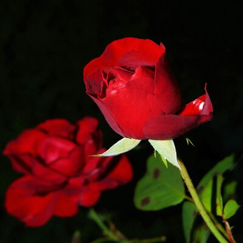
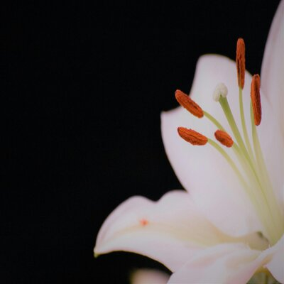
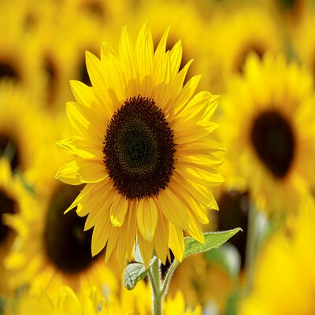

Radiant Roses
Roses are one of the most popular and beautiful flowers in the world. They symbolize love and romance.
Learn More

Lovely Lilies
Lilies are known for their large, fragrant flowers. They are often associated with purity and refined beauty.
Learn More

Sunny Sunflowers
Sunflowers are known for their bright yellow petals and tall stature. They symbolize adoration and loyalty.
Learn More